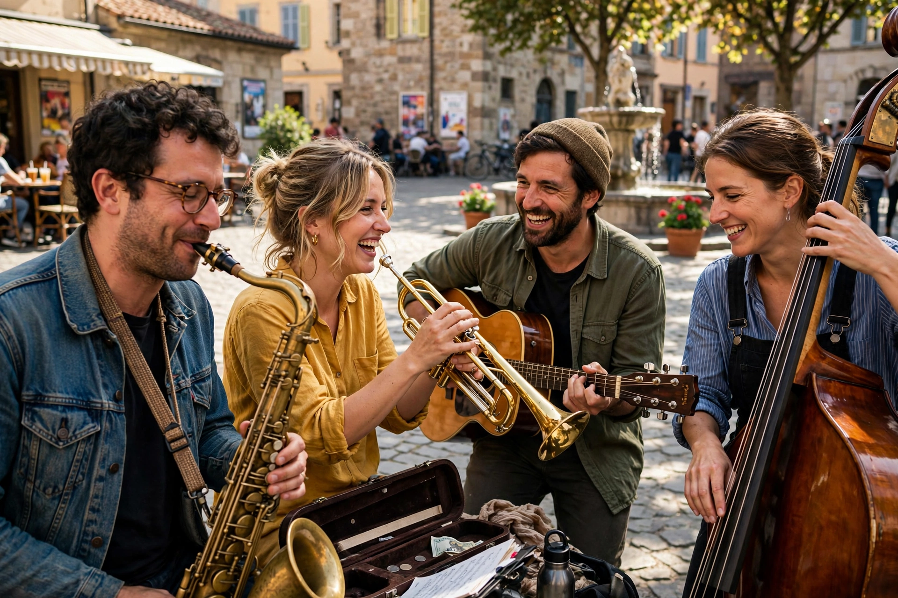

Spontaneity is a quality of behaviour, action, or process that arises from impulse or immediate feeling rather than from prior planning or external compulsion. A spontaneous act is voluntary but unpremeditated: it is experienced as arising freely in the moment, often with a sense of freshness, authenticity, and energy.

Psychologists distinguish spontaneity from impulsivity: whereas impulsive behaviour is driven by urges with little reflection, spontaneity is associated with creativity, psychological flexibility, and well-being. Jacob L. Moreno, founder of psychodrama, placed spontaneity at the centre of mental health, defining it as an adequate response to a new situation or a new response to an old situation.
Spontaneity is a prized value in many art forms. In improvisational theatre, Viola Spolin taught that spontaneity releases the player's intuition and creativity when self-consciousness falls away. Jazz improvisation, stream-of-consciousness writing, action painting, and surrealist automatism all seek to bypass deliberation in favour of immediate expression.
Philosophers have debated whether genuinely spontaneous action is compatible with free will and determinism. In the natural sciences, "spontaneous" describes processes that occur without external input, such as spontaneous emission in physics or a spontaneous chemical reaction that proceeds without added energy once initiated.